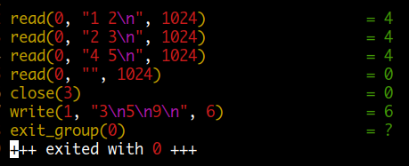
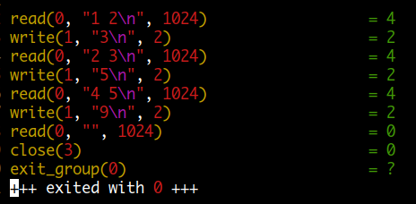

close ( filename [ , how ] )
fflush ( [ filename ] )
대부분의 프로그램들이 출력을 할 때 버퍼를 사용합니다. 왜냐하면 작은 양의 데이터를 받는 즉시 매번 출력을 하는 것보다는 버퍼에 데이터가 찼을 때 출력하는 것이 효율적이기 때문입니다. 하지만 경우에 따라서 버퍼에 있는 내용을 바로 출력해야 될 때가 있습니다. 이때 사용할 수 있는 함수가 fflush 입니다.
fflush 함수는 filename 인수와 관련해서 버퍼링 되고 있는 내용을 바로 write 합니다. 여기서 filename 은 write 하기 위해 open 한 파일 이거나 또는 pipe 나 coprocess 로 redirect 되는 shell command 가 될 수 있습니다. filename 인수를 주지 않을 경우는 현재 open 되어 있는 모든 파일과 pipes 를 flush (write) 합니다.
예를 들어 매분마다
>,>>을 이용해 파일에 쓰기를 한다고 할 경우 중간에 Ctrl-c 로 awk 를 비정상 종료하게 되면 버퍼에 있는 내용은 파일에 쓰기가 안됩니다. print 명령으로 write 한 후에 fflush() 해야 실제 파일에 쓰기가 됩니다. 물론 파일을 close() 하거나 awk 가 정상 종료되면 파일 쓰기가 정상적으로 완료됩니다.
다음은 버퍼링과 관련된 상황을 알아보기 위한 테스트입니다. awk 와 cat 명령이 파이프로 연결되어 있어 awk 에 입력되는 값들의 연산 결과가 바로 출력되지 않고 버퍼링 되는 것을 볼 수 있습니다. 이어지는 그림은 strace 결과인데요 ctrl-d 를 이용해 입력을 종료해야 버퍼에 저장되어 있는 연산 결과 값들이 출력되는 것을 볼 수가 있습니다.
$ awk '{ print $1 + $2 }' | cat
1 2 # 입력
2 3 # 입력
4 5 # 입력 ctrl-d 로 종료
3 # 출력
5 # 출력
9 # 출력

다음은 fflush 함수를 사용한 경우입니다.
awk 에 입력되는 값들의 연산 결과가 버퍼링 되지 않고 바로 출력되는 것을 알 수 있습니다.
$ awk '{ print $1 + $2; fflush() }' | cat
1 2 # 입력
3 # 출력
2 3 # 입력
5 # 출력
4 5 # 입력
9 # 출력

system ( command )
외부 시스템 명령을 실행하고 종료 상태 값을 반환받을 수 있는 함수입니다.
함수에 전달된 명령이 실행될 때는 sh -c 형태로 실행됩니다.
이때 종료 상태 값은 shell 에서처럼 참일 경우 0 을 반환하므로 if 문에서 사용할 때는
다음과 같이 해야 합니다.
# 파일 foo 가 실행 파일일 경우 { ... } 블록을 실행
if ( system("test -f foo -a -x foo") == 0 ) { ... }
종료 상태 값 반환이 필요 없고 많은 수의 외부 명령을 실행해야 된다면 다음과 같은 방법을 이용하는 것이 효율적입니다.
while (more stuff to do)
print "command" | "/bin/sh"
close("/bin/sh")
system 함수가 가지는 또 한가지 기능은 함수가 실행될 때 fflush() 함수와 같이
pending output 을 flush 한다는 것입니다.
따라서 system("") 는 사실상 ffush() 함수와 동일한 기능을 합니다.
이때 awk 는 "" 인수 값을 별도로 처리하므로 shell 이 실행되거나 하지는 않습니다.